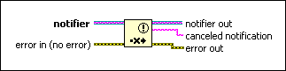
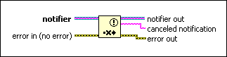

Cancel Notification Function
Owning Palette: Notifier Operations Functions
Requires: Base Development System
Erases any message currently in a notifier and returns the cancelled message.

 Add to the block diagram Add to the block diagram |
 Find on the palette Find on the palette |
Owning Palette: Notifier Operations Functions
Requires: Base Development System
Erases any message currently in a notifier and returns the cancelled message.

| Add to the block diagram |
Find on the palette |
 |
notifier is a reference to a notifier. Use the Obtain Notifier function to obtain a notifier reference. |
 |
error in describes error conditions that occur before this node runs. This input provides standard error in functionality. |
 |
notifier out returns notifier unchanged. |
 |
cancelled notification contains the last notification sent to the notifier. This data type changes to match the subtype of notifier. |
 |
error out contains error information. This output provides standard error out functionality. |
If any Wait on Notification or Wait on Notification from Multiple functions received the message before the call to this function, those functions continue to execute. This function does not recall or reset any wait functions. After you cancel a notification, any subsequent wait functions wait until the notifier receives another message. Canceling a notification before the notifier has a message does not result in an error.